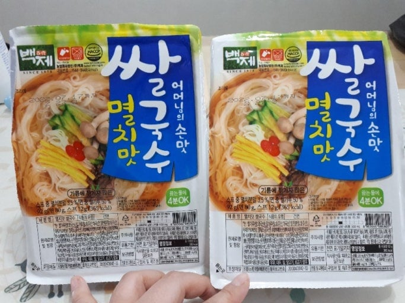
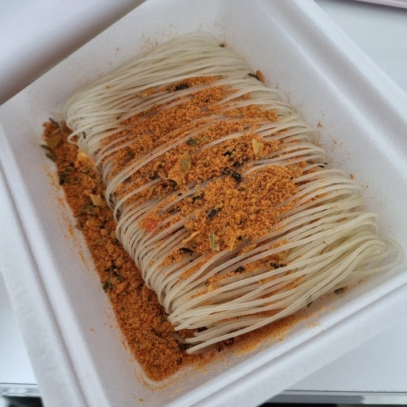

솔직히 맛있었음.


솔직히 맛있었음.
10분
정답
국물맛 자체는 괜찮은데 찔기고 소화안됨
먹고 채했어서 별로였음
나도 이거 좋아해
라면보다 훨낫다
이거맛있음
ㅇㅇ 나도 좋아했음
안먹는다고 물량은 넘처나는데 좋았지뭐
푸우우욱 익히면 좋았음
저거 맨날 남아서 나는 세개 정도 물 꽈아악 불려서(약 8분) 세개 한꺼번에 호로록 했지
소대원 중에 싫어하는 사람 많았지 ㅋㅋ 일반 컵라면 하나랑 쌀국수 두개랑 거래돼서 난 쌀국수 쌓아놓고 먹었음
국물은 맛있어 면이 별로야
난 20분넘게 불려서 국물 거의 없게해서 먹었는데 수제선 돌고나서 땀흘렸을때 짭잘하이 좋았음
ㅇㅈ
난 지금도 내돈내산하는데
솔직히가 아니고 그냥 맛있음
반박시 내 말이 맞음
맛있어
? 원래 맛있는 새끼 아니냐?
물이 미지근해서 싫었지.
사회나와서는 파곰탕면 이나 매운맛 사먹음
맛은 있는데 굳이 라면 두고 먹을건 안됐음
정수기 물이 충분히 뜨거워야 성공확률이 높았던놈
ㅇㅈ 맛있음
난 쌀국수 가져오면 왕뚜껑이랑 바꿔줬는데,
나중엔 그냥 주더라 애들이
존맛이야 쌀국수
지랄하지마! 저거 40km 행군하고도 안먹었어!
이거 존맛 맞다.
인정. 우유넣고 전자레인지에 돌려먹으면 까르보나라였음
이건 써진 시간보다 훨씬 오래 불려서 완전 푹 퍼진걸 먹어야 맛있지
추위 대비해서 2박스에 쟁겨놨음
난가끔사먹기더함
군대에서 뭐 맛없다는 애들 밖에서 뭐먹고사는지 모르겠음
저게 유통기한 오래되거나 물이 조금이라도 덜 뜨거우면 면이 안익어서그렇지 멀쩡한건 맛있었음
물 따라내고 스프 반만넣어서 비빔면으로 먹어도 맛있었는데...


나 라면 못먹어서 이거 육개장이랑 바꿔 먹었는데
일단 스프 뜯지 않고 뜨거운물로 한번 뿔리고, 물버히고 뜨거운물 다시받고 스프받으면 면 잘익음
나도 좋아함 일단 아주 뜨거운 물로 면을 확실히 익혀야 함
유통기한 지난 보급 라면은 먹어도 저건 안먹드라
찐은 곰탕맛임
이건 권장 조리법이 잘못됐음
뜨거운물 붓고 4분 대기가 아니라, 냄비에 내용물 넣고 팔팔 끓여서 먹어야 면이 풀려서 맛있어짐
.
전역하고도 마트에서 가끔사먹음